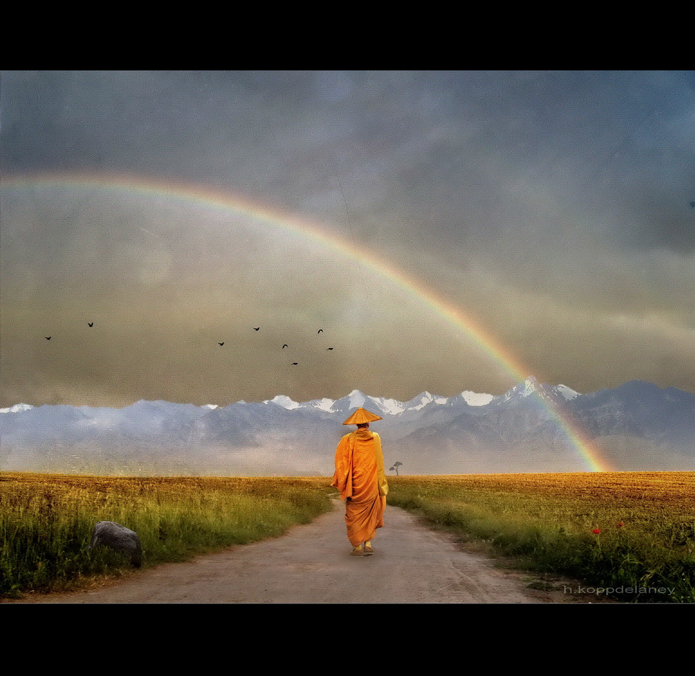

Yashin is a strong warrior with very muscular definition. Despite his strength, he does not go out of his way to see himself above any other member of his clan. He is modest, likeable, and competitive when necessary. Yashin moves with his head held high at all times, exuding a palpable and inspiring level of confidence to those around him.
